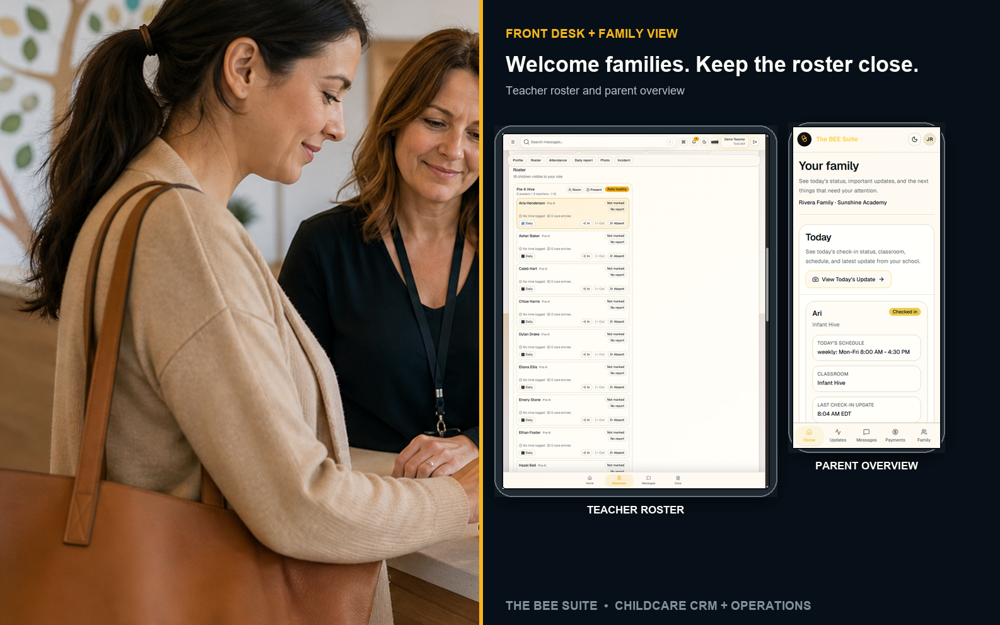
Front Desk + Family View
Teacher roster and parent overview
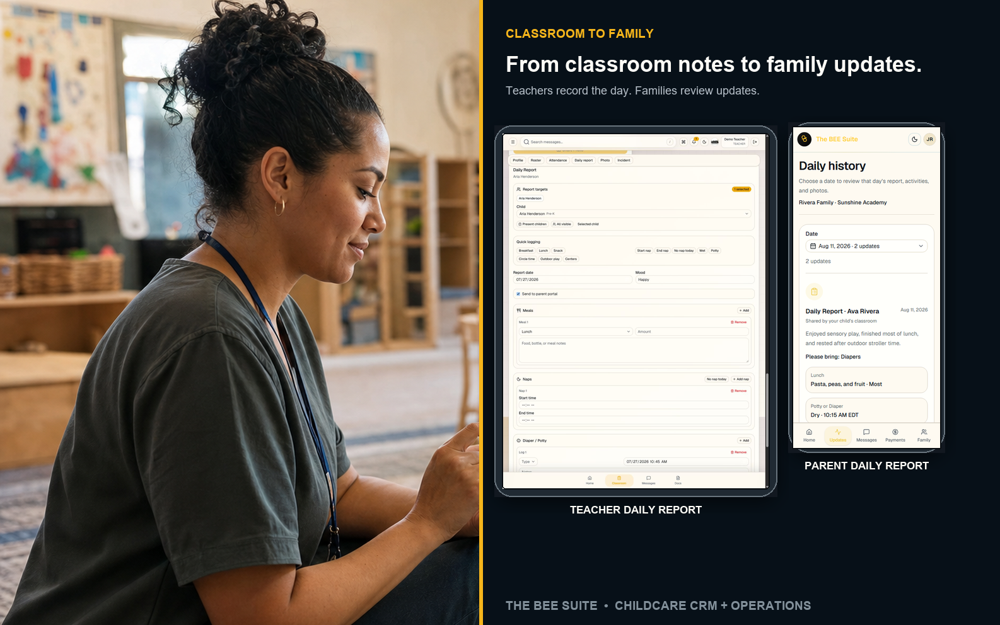
Classroom To Family
Teachers record the day. Families review updates.
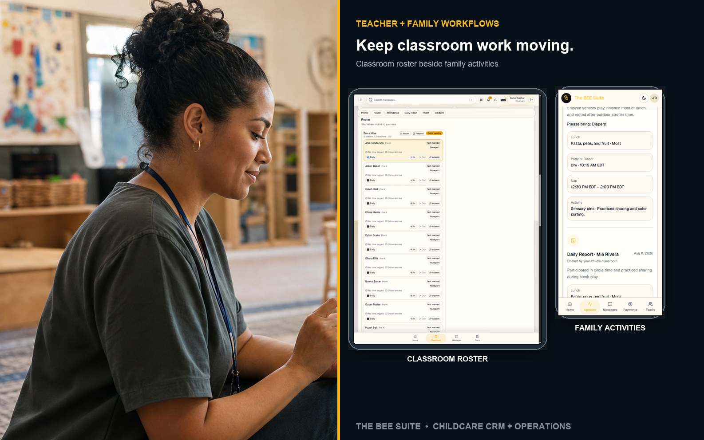
Teacher + Family Workflows
Classroom roster beside family activities
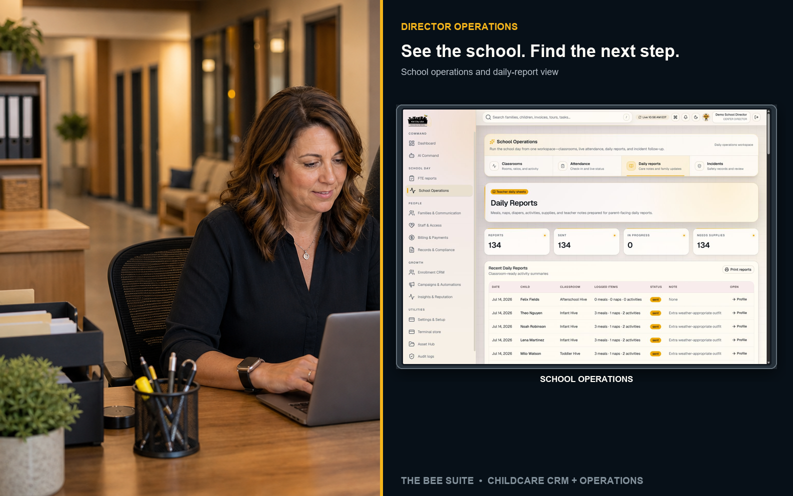
Director Operations
School operations and daily-report view
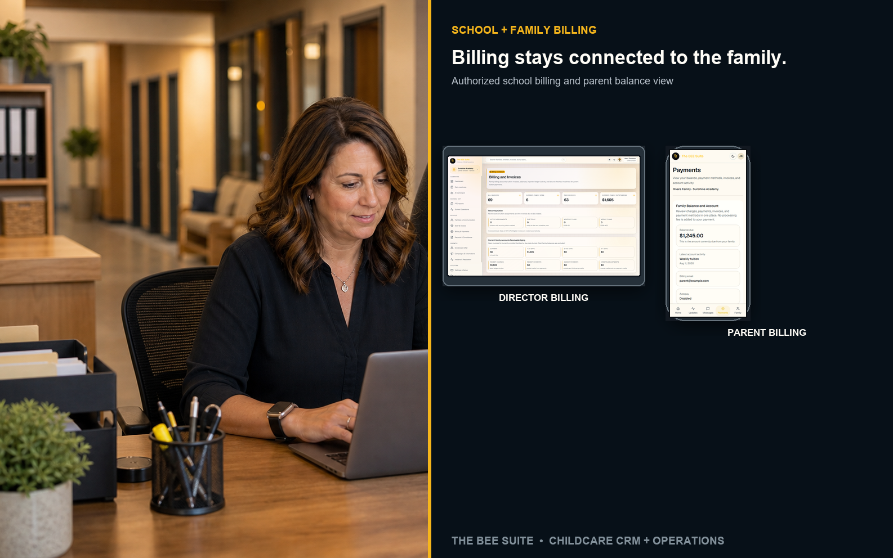
School + Family Billing
Authorized school billing and parent balance view
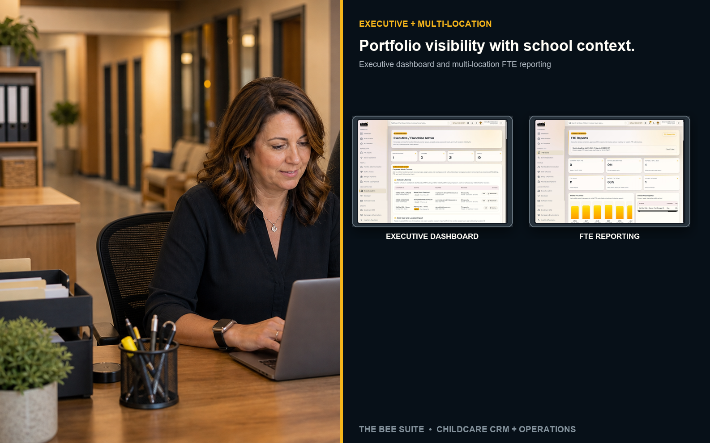
Executive + Multi-Location
Executive dashboard and multi-location FTE reporting
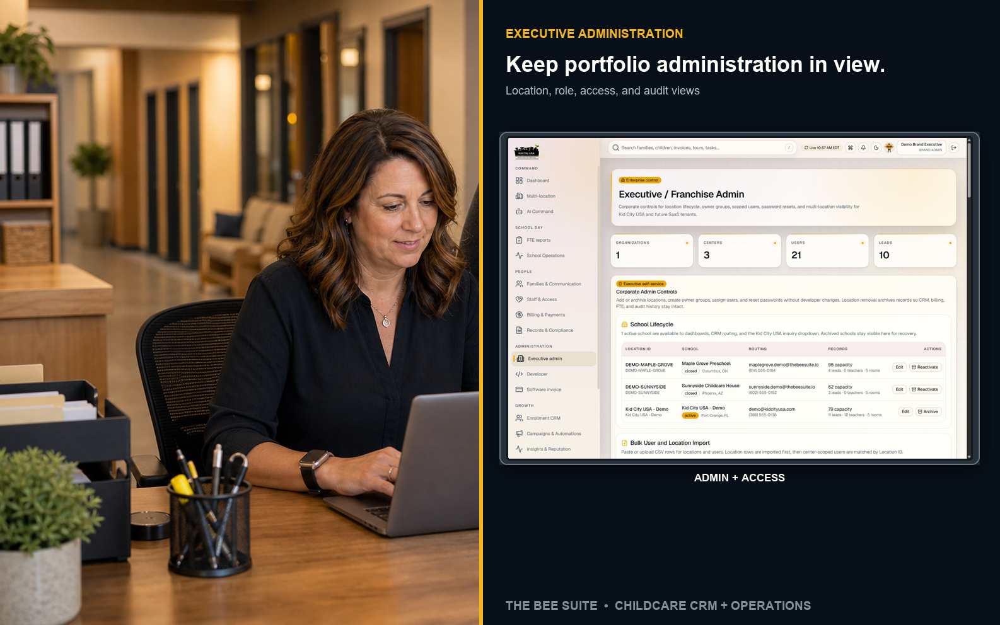
Executive Administration
Location, role, access, and audit views
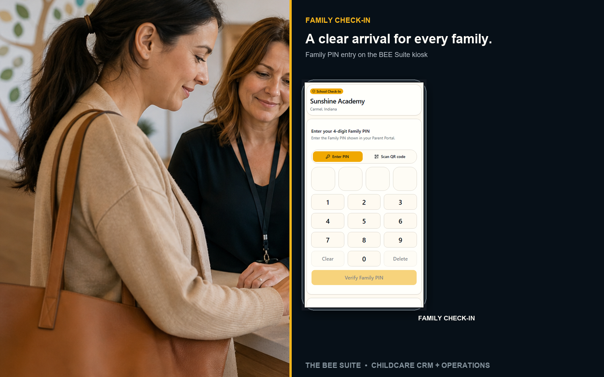
Family Check-In
Family PIN entry on the BEE Suite kiosk
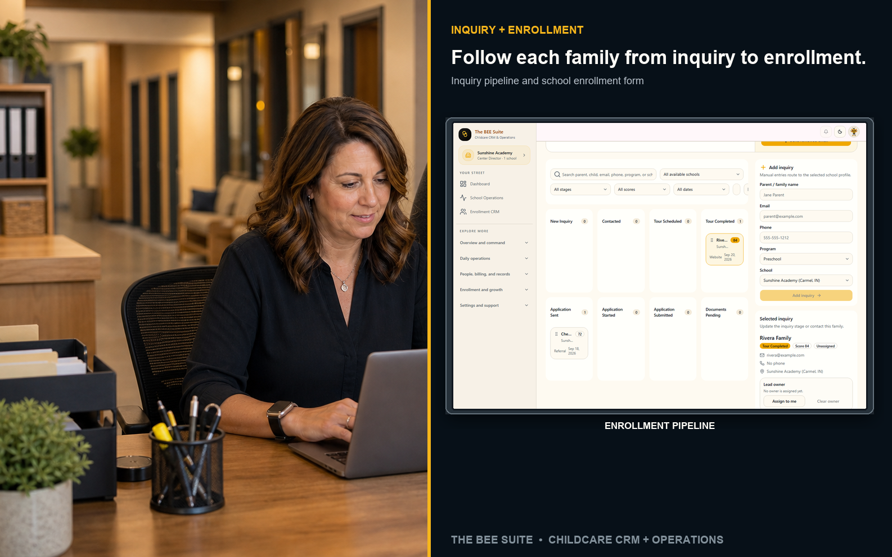
Inquiry + Enrollment
Inquiry pipeline and school enrollment form
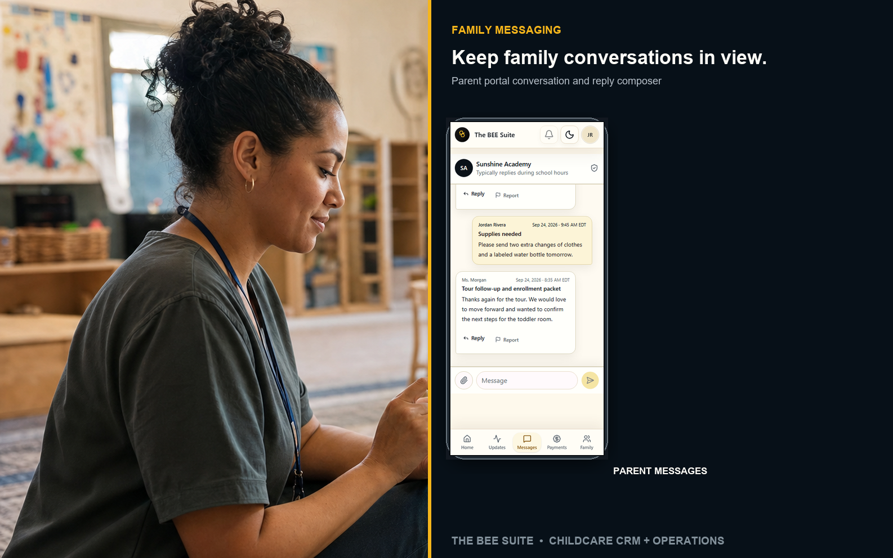
Family Messaging
Parent portal conversation and reply composer
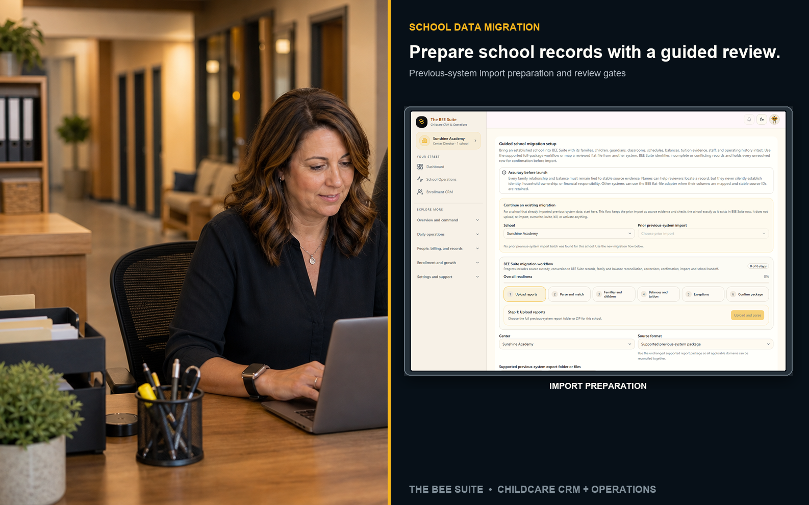
School Data Migration
Previous-system import preparation and review gates
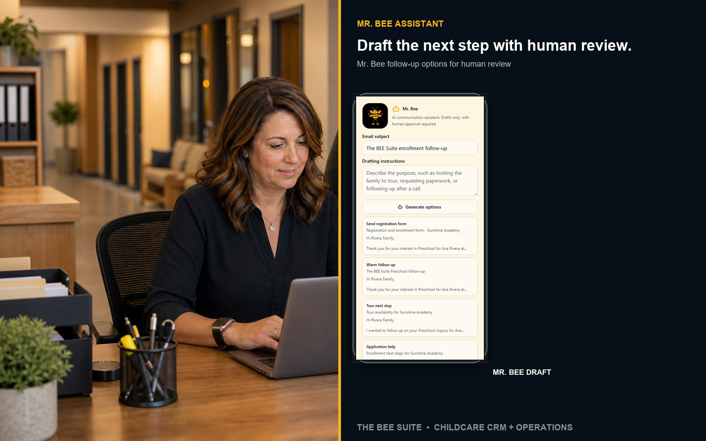
Mr. Bee Assistant
Mr. Bee follow-up options for human review